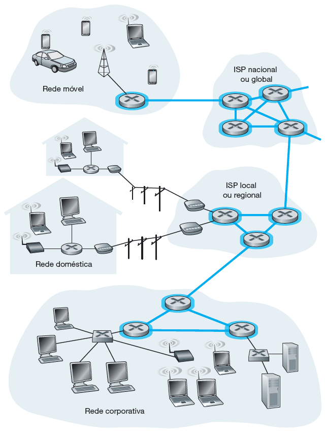

O Núcleo da Rede
Confira agora os principais pontos sobre o núcleo da rede.
O núcleo da rede consiste em uma rede de dispositivos, por exemplo, roteadores e switches, os enlaces, normalmente de alta velocidade, que interligam esses dispositivos. O núcleo da rede oferece os possíveis caminhos que permitem a interconexão dos sistemas finais, conforme mostrado na imagem (destaque em azul). Confira!

Núcleo da Rede
O núcleo da rede é organizado pelos diversos provedores de serviços de internet (Internet Service Providers — ISPs), pelos quais nós, usuários, contratamos serviços para nos conectarmos à internet. Conectar usuários finais e provedores de conteúdo a um provedor de acesso (ISP) é apenas uma parte de todo o desafio: interligar os bilhões de sistemas finais que compõem a internet. Isso é feito a partir da criação de uma rede de redes.
Existem centenas de milhares de ISPs, com diferentes portes, abrangência e finalidades. Por exemplo, ISPs que têm por finalidade oferecer serviço de conexão dos usuários à internet. Outros são conhecidos por serem ISPs de trânsito, que realizam a interligação de ISPs, sem oferecer acesso direto aos usuários. Normalmente, os ISPs de trânsito são responsáveis pela administração dos famosos cabos submarinos.
A abrangência dos ISPs está relacionada à região ou alcance que possuem. Em determinada região, como uma cidade, pode haver um ISP regional ao qual os ISPs menores, chamados locais, se conectam. Cada ISP regional, então, se conecta a ISPs chamados de nível 1, que possuem abrangência nacional e internacional. Por sua vez, os ISPs de nível 1 podem se interconectar e trocar dados entre si.
É possível em algumas regiões haver um ISP regional maior, ao qual os ISPs regionais menores se conectam. O ISP regional maior, então, se conecta a um ISP de nível 1.
Perceba como é complexo o núcleo da rede e que existe certa hierarquia de provedores.
Para facilitar a interconexão dos diversos provedores, existe o chamado ponto de presença (PoP — Point of Presence), que é um grupo de um ou mais roteadores (no mesmo local) na rede do provedor, onde os ISPs clientes podem se conectar para poderem acessar outras redes.
Qualquer ISP (exceto os de nível 1) pode efetuar o multi-homing, ou seja, conectar-se a dois ou mais ISPs provedores para terem redundância. Por exemplo, um ISP local pode efetuar multi-home com dois ISPs regionais, ou então com dois ISPs regionais e também com um ISP de nível 1.
Comentário
Os ISPs clientes pagam aos seus ISPs provedores para obter interconectividade global com a internet. Um ISP cliente paga a um ISP provedor conforme a quantidade de tráfego que ele troca com o provedor.
Para reduzir custos, um par de ISPs próximos no mesmo nível de hierarquia pode emparelhar, ou seja, conectar diretamente suas redes, de modo que todo o tráfego entre elas passe pela conexão direta, em vez de passar por intermediários mais à frente. Isso em geral é feito em acordo, ou seja, nenhum ISP paga ao outro.
Os ISPs de nível 1 também são emparelhados uns com os outros, sem taxas. Assim, uma empresa de terceiros pode criar um ponto de troca da internet (internet exchange point — IXP), que quase sempre é em um prédio à parte, com seus próprios comutadores. O IXP é um ponto de encontro onde vários ISPs podem se emparelhar e permitir que haja conexão direta entre os diversos provedores que utilizam essa infraestrutura.
Saiba Mais
No Brasil, existe o IX (ix.br), que é o ponto de troca de tráfego utilizado pelos principais provedores de acesso à internet.
O que você achou do conteúdo?
Menu
Redes de computadores e a internet
Módulos